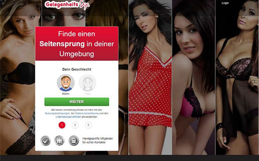

ErotikPur.de ist eine neue, moderne Community mit offenen Frauen und Männern. Da das Portal noch relativ jung ist, findest Du hier besonders aktive Mitglieder und weniger Fake Profile als auf den meisten anderen Casual Dating Seiten. Das erhöht die Erfolgschancen, besonders für Männer! Leider müssen auch hier Frauen zahlen. Dadurch gibt es bereits jetzt einen Männerüberschuss.
Zum Testbericht-
 ErotikPur.de
ErotikPur.de - Gelegenheitssex.com
Gelegenheitssex.com ist eines der neusten Casual Dating Plattformen Deutschlands und erfreut sich danke der sogenannten „Seitensprung-Garantie“ momentan großer Beliebtheit. Das Portal ist modern und bietet viele tolle Funktionen. Obwohl man auch hier diverse Fake Profile findet, sind die Erfolgsaussichten hier deutlich besser als bei den meisten anderen Portalen.
Zum Testbericht - CasualDatingClub.de
Ein hoher Frauenanteil und über 10.000 Neuanmeldungen am Tag machen CasualDatingClub.de zu einer schnell wachsenden Plattform für Freundschaft Plus. Da hier auch Frauen zahlen müssen, ist die Qualität der weiblichen Profile besser als auf den meisten anderen Plattformen, was für Männer eine bessere Erfolgsquote bedeutet. Leider gibt es trotz des hohen Frauenanteils aktuell einen Männerüberschuss.
Zum Testbericht - VersauteLiebe.de
Momentan ist VersauteLiebe.de ein echter Geheimtipp unter den Casual Dating Portalen. Hier gibt es aktuell sehr viele aktive Frauen und Männer. Zudem musst Du hier kein Abo abschließen und bekommst sogar Gratis-Coins bei der Anmeldung. Natürlich gibt es hier auch diverse Fake Profile und einen ordentlichen Männerüberschuss. Dennoch ist das Portal eine echte Empfehlung, die Du Dir unbedingt mal ansehen solltest.
Zum Testbericht - Lustagenten.de
Mit sehr vielen aktiven Mitgliedern und einer sehr günstigen VIP Testmitgliedschaft ist Lustagenten.de zu einer der beliebtesten Casual Dating Plattformen Deutschlands geworden. Natürlich gibt es hier auch einige Fake Profile und einen ordentlichen Männerüberschuss. Dennoch ist das Portal eine echte Empfehlung und immer einen Versuch wert.
Zum Testbericht
Was ist Casual Dating?
Casual Dating ist ein gar nicht so neuer Trend, der sich schon seit Jahren großer Beliebtheit erfreut. Beim Casual Dating, übrigens auch Freundschaft Plus genannt, verabreden sich Frauen und Männer, die – obwohl sie single sind – nicht auf Abenetuer und Leidenschaft verzichten möchten, aber dennoch keine feste Partnerschaft suchen. Es geht beim Casual Dating aber nicht nur darum, schnell einen One Night Stand zu finden. Eine sogenannte Freundschaft Plus kann beinhalten, dass man sich regelmäßig verabredet und eine Art körperliche Beziehung aufbaut aber ohne den Druck und die Erwartungen, die man an eine feste Beziehung haben würde. Übrigens werden Casual Dating Portale nicht nur von Singles benutzt sondern werden auch nicht selten von verheirateten oder vergebenen Frauen und Männern besucht, die sich eine diskrete und anonyme Affäre oder einen schnellen und unkomplizierten Seitensprung wünschen. Beim Casual Dating gilt das Motto: „Alles kann, nichts muss!“ Welche Dating Erfahrungen man also sammelt hängt auch ein wenig davon ab was man wirklich sucht und wie man seine Wünsche kommuniziert.
Was sollte man auf einem Casual Dating Portal beachten?
Wenn man sich dafür entschieden hat online nach einer sogenannten Freundschaft Plus zu suchen, sollten man diverse Regeln befolgen. Schließlich sollen die ersten Dating Erfahrungen auch wirklich positiv sein. Zunächst einmal sollte man sich auf möglichst mehreren Casual Dating Portalen gleichzeitig anmelden. Nicht alle Plattformen haben die gleiche Anzahl an Mitgliedern und es kann so zum Beispiel sein, dass Portal „a“ in einer Stadt oder Region sehr beliebt ist, während es in einer anderen Stadt oder Region weniger Mitglieder hat. Auch ist, ob ein Portal zu einem passt oder nicht, oft Geschmackssache. Was bringen Dir gute Bewertungen von anderen Usern, wenn Du Dich auf der Plattform nicht gut zurecht findest? Die Dating Erfahrungen, die Du sammelst, können also ganz unterschiedlich ausfallen. Einen weiteren Punkt solltest Du auch berücksichtigen, wenn Du Dich auf einem Portal anmeldest: Erstelle ein aussagekräftiges Profil. Dein Profil ist Deine Visitenkarte und hier solltest Du das Interesse der anderen Mitglieder wecken. Bedenke auch immer, dass es etwas Zeit in Anspruch nehmen kann, eine Freundschaft Plus zu finden. Bringe etwas Geduld mit uns Du wirst früher oder später die ersten Erfolge für Dich verzeichnen können.